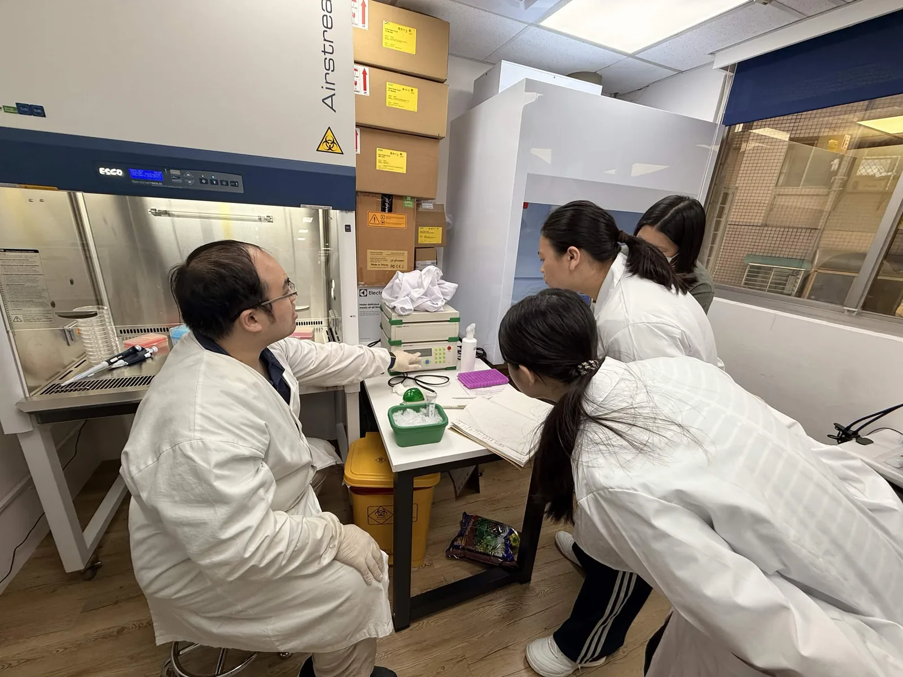
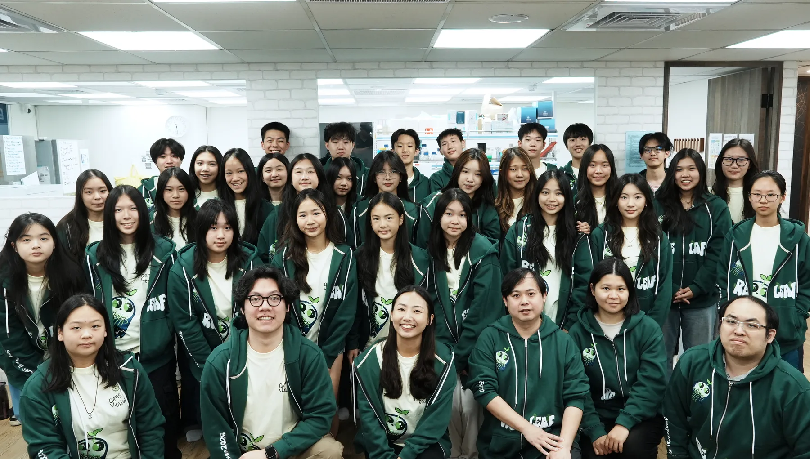
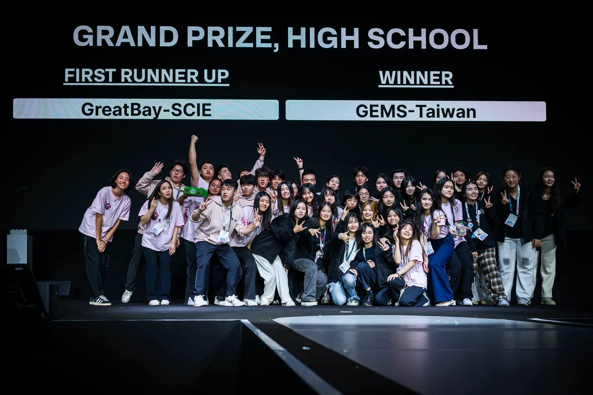
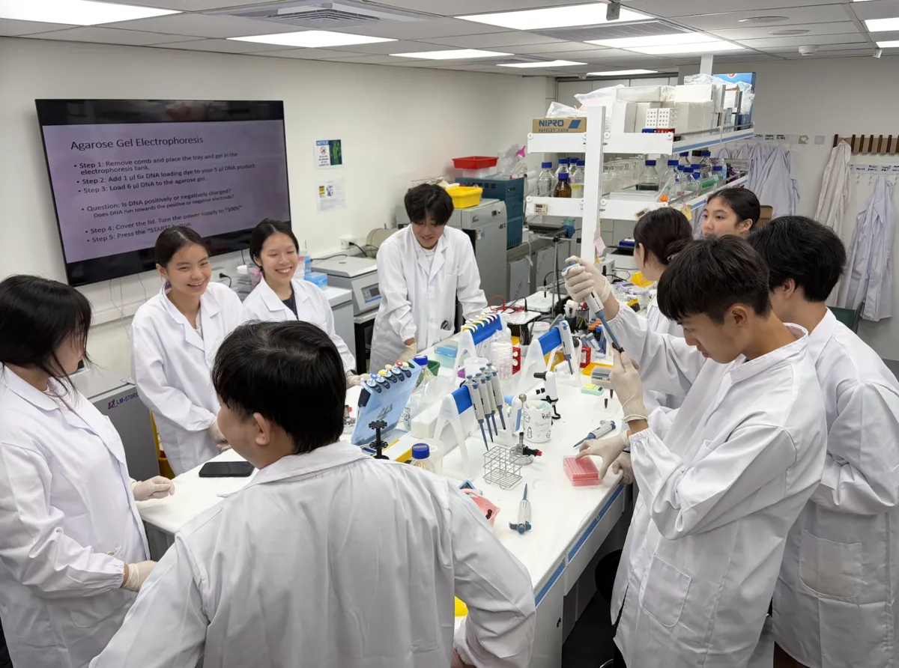
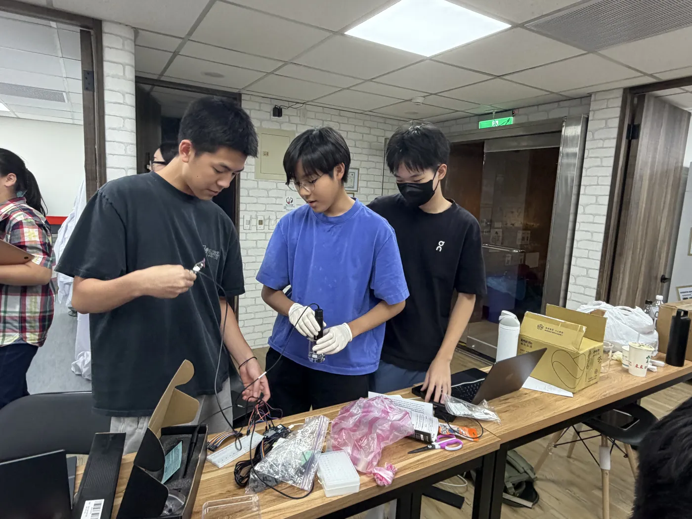
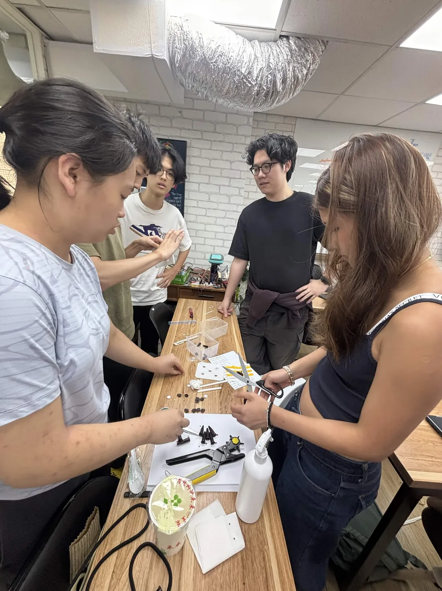
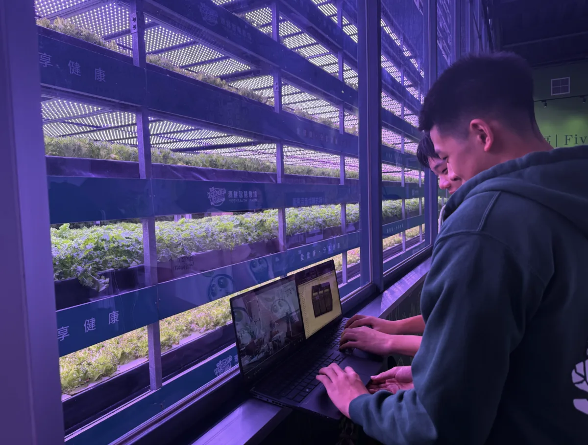
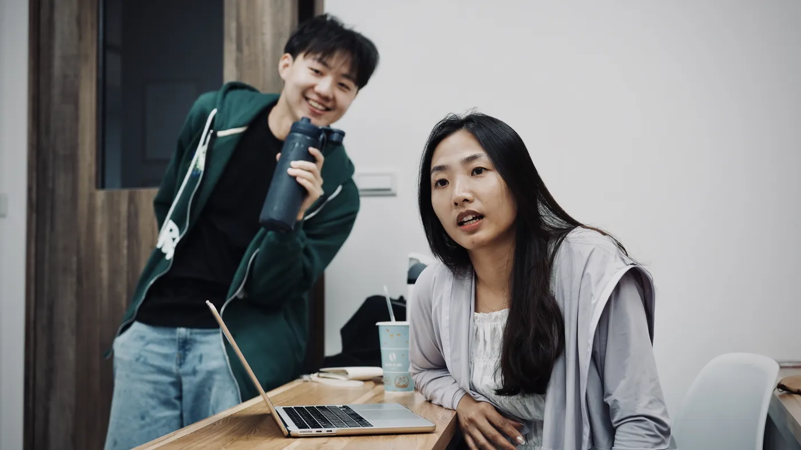
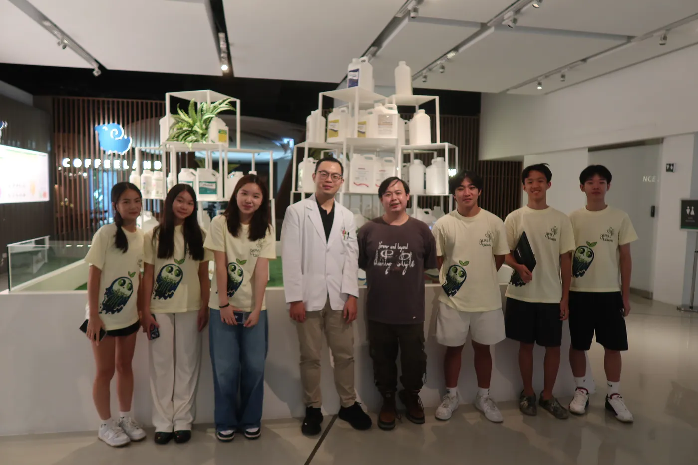

這一年



一月到九月，這個專案經過二十四場對話，方向改過幾次。

今年的 ReLeaf 專案由 31 位高中生從不同高中聯合組成。指導老師的背景包含生物、數學、化學與人文。GEMS 是一個在台北內湖的獨立研究機構，帶學生走出課本，把學到的科學拿去用在真實的問題上。
iGEM 由麻省理工學院發起，每年有來自四十多個國家、四百多支隊伍參加，分成大學組與高中組。
每支隊伍要在一年內完成一個完整的專案：找題目、做實驗、設計硬體、建模寫程式，還要走出去訪談利害關係人，年底在世界大賽上向評審答辯。評審看技術，也看安全性、社會責任，以及團隊跟誰談過。
GEMS-Taiwan 已連續多年參賽。2024 年，我們在巴黎從全球一百多支高中隊伍中拿下高中組世界冠軍（Grand Prize, High School）。


台灣的小農愈來愈難預測天氣。乾旱、高溫、鹽害不是每年都來，但來的時候整季就沒了。市面上的抗逆境資材多半是大廠的成品，買得到，但貴，施用的時機也常落在逆境發生之後。
今年五月我們去花博農民市集問攤商他們最怕什麼。他們先講的是病蟲害和缺水，鹽害排在後面，對農業科技也有戒心。
接中央氣象署與防檢署的公開資料，在逆境來臨前判斷要不要開始生產。
工程改造的枯草桿菌被綠光打開，開始分泌保護蛋白。不需要時燈是關的。
0.2 µm 中空纖維膜，孔徑小於菌體。蛋白穿過去，菌留在裡面。
取出的是無細胞液體，直接進灌溉或水耕管線。不需要冷鏈與庫存。




| 三種保護劑 | 作用機制 |
|---|---|
| ACC deaminase 酵素 |
分解乙烯的前驅物 ACC，降低植物在逆境下的乙烯激增，減緩黃化與生長停滯。 |
| LEA14 蛋白質 |
植物自身的脫水保護蛋白。細胞失水時包覆膜與蛋白質，避免聚集變性。 |
| BoPep4 胜肽 |
青花菜天然的誘導胜肽，由受體 PEPR1／PEPR2 辨識，啟動植物自身的逆境反應。 |
三種都是蛋白質或胜肽，不是化學合成，作用在植物自身的生理反應上，不殺蟲也不殺菌。今年因為競賽規範與生物安全考量，我們不做任何田間試驗。


裝置端：反應器連續跑滿 102 小時，OD600 從 0.84 升到 3.77，線性擬合 R² 0.988，同一段時間內跨膜壓差漂了 12 mbar。線上光度計是學生做的，對商用機 R² 0.995。三種保護劑的基因構築都已定序確認，ACC deaminase 在上清液驗到帶。
裝置會跑了，三種保護劑的構築也做完了。接下來是從實驗室到田間那一段，那是您的領域。